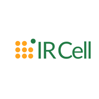
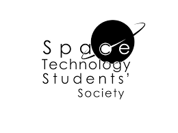

© 2019 PRAKHAR MUNDRA. All rights reserved
 I was a member of INTERNATIONAL RELATIONS CELL as a junior associate for the period FEB-APR 2019. My works included:Analysis of International Universities on basis of thier qs rank ,Campus tour Task ,Final Proposal Task etc.
I was a member of SPATS as a junior coordinator for my first year. Our team successfully conducted our annual fest "NATIONAL STUDENT SPACE CHALLENGE" in SEP-2018 and many other events like SKY GAZE over the year.